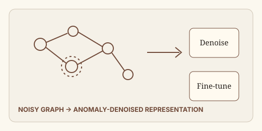
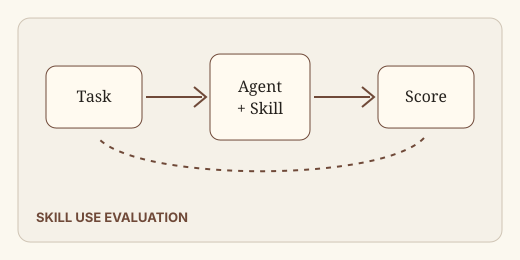
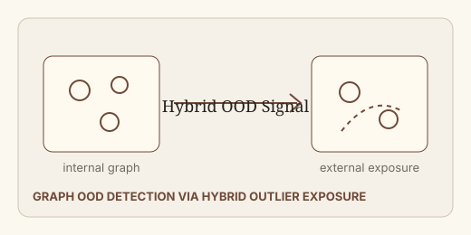
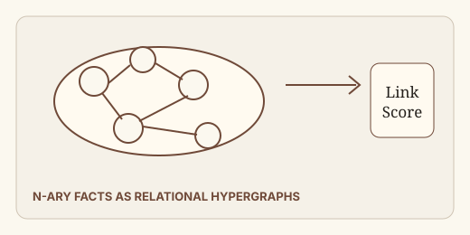

CCF A · AAAI 2024 · Cited 99J. He, Q. Xu, Y. Jiang, Z. Wang, Q. Huang
Proceedings of the AAAI Conference on Artificial Intelligence 38(8), 8481-8489.
A two-stage anomaly-denoised framework that improves graph anomaly detection by reducing anomaly overfitting and homophily traps.

Preprint · 2026 · Cited 16X. Li, W. Chen, Y. Liu, S. Zheng, X. Chen, Y. He, Y. Li, B. You, H. Shen, J. Sun, et al.
arXiv preprint arXiv:2602.12670.
A benchmark focused on reusable agent skills and skill-usage behavior across tasks.
CCF A · AAAI 2025 · Cited 3Y. Sun, Q. Xu, Z. Wang, Z. Yang, J. He
Proceedings of the AAAI Conference on Artificial Intelligence 39(12), 12613-12621.
An unknown-aware multi-label learning method based on energy distribution separation.
CCF B · ICASSP 2025 · Cited 6J. Li, H. Xu, S. Zhu, J. He, H. Wang
ICASSP 2025 IEEE International Conference on Acoustics, Speech and Signal Processing.
A semantic-aware video quality assessment model for AI-generated video evaluation.

CCF A · ACM MM 2024 · Cited 9J. He, Q. Xu, Y. Jiang, Z. Wang, Y. Sun, Q. Huang
Proceedings of the 32nd ACM International Conference on Multimedia, 1544-1553.
A graph OOD detection framework that combines external synthetic exposure and internal graph signals.

CCF A · ACM MM 2024 · Cited 5Y. Wang*, J. He*, H. Wang
Proceedings of the 32nd ACM International Conference on Multimedia, 8759-8767.
A relational hypergraph model for link prediction in n-ary knowledge structures.
CCF C · KBS 2021 · Cited 23Y. Wang, H. Wang, J. He, W. Lu, S. Gao
Knowledge-Based Systems 233, 107500.
A type-aware graph attention model for structured reasoning over knowledge graphs.